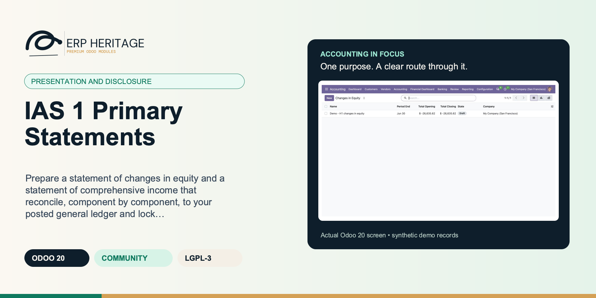
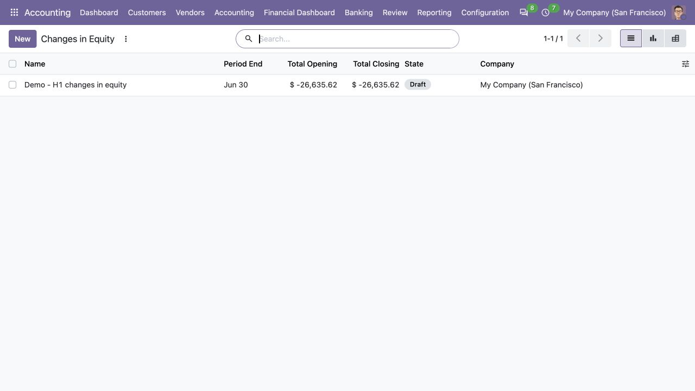
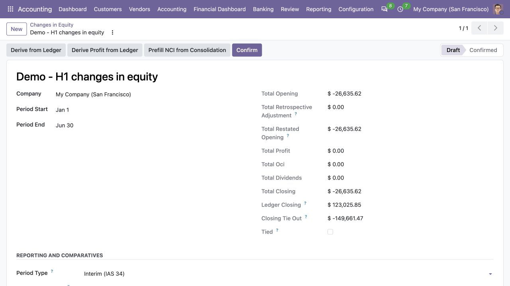
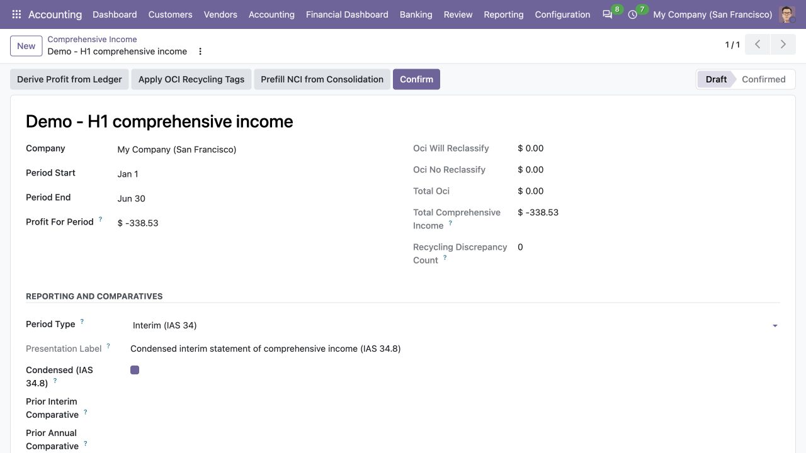
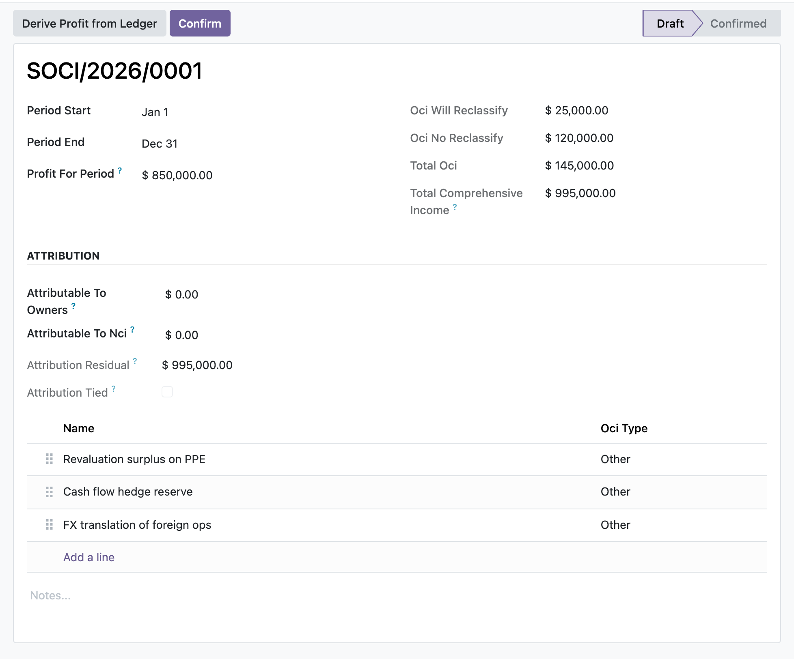

ERP HERITAGE / ODOO 20 COMMUNITY
Prepare a statement of changes in equity and a statement of comprehensive income that reconcile, component by component, to your posted general ledger and lock once signed off.
LGPL-3 · Odoo 20 · v20.0.1.3.0 · Module guide, setup, workflows and rollout checks
The purpose
This module adds the IAS 1 statement of changes in equity and statement of comprehensive income, with one authoritative statement per company and period. SoCI includes the IAS 1.82 profit-or-loss line items, related tax for every OCI component, associates and joint ventures OCI, reclassification sections, owners/NCI attribution and annual or IAS 34 interim comparatives. SoCE reconciles every equity component through retrospective restatement, item-level OCI, profit, dividends and share movements, including the IAS 1.107 dividend-per-share disclosure. Structural OCI tags are sourced only from explicit suite account settings; translated account names are never used as configuration. Signed statements freeze, preserve consolidation provenance, and tie to the posted ledger. The cross-statement control independently compares P&L profit with balance-sheet-implied current-year earnings, SoCI and SoCE for the same period.
Inside Odoo 20
Captured from Odoo 20 Community using synthetic demonstration records. Configuration screens show the available workflow; external service connectivity still requires the relevant provider setup and validation.

Draft changes-in-equity statement lists its opening and closing workpaper totals.
Captured 2026-09-22 from isolated Odoo 20 Community database with synthetic demonstration records. No external submission or live banking activity is represented.

Draft equity statement exposes the ledger closing balance and unresolved tie-out for review.
Captured 2026-09-22 from isolated Odoo 20 Community database with synthetic demonstration records. No external submission or live banking activity is represented.

Draft interim comprehensive-income statement includes profit derived from the synthetic ledger.
Captured 2026-09-22 from isolated Odoo 20 Community database with synthetic demonstration records. No external submission or live banking activity is represented.
Inside this module
Derive opening equity, per-component opening balances and profit for the period straight from posted journal items, then read the closing tie-out that shows whether the worksheet actually agrees with the general ledger at period end.
The equity statement rolls each component from opening to closing across profit, OCI, dividends, share issues and other movements; the comprehensive income statement groups OCI by whether it may be reclassified to profit or loss and attributes total comprehensive income to owners and non-controlling interests.
Once an EH Accounting Manager confirms a statement its figures and lines are frozen, so a raw write, a new line or a deletion cannot silently move the totals. Reopening to edit is a manager-gated action that unlocks the figures again.
Ledger derivation returns zero both for a genuine nil balance and for the total absence of postings, so the module separately probes whether any posted equity or P and L item exists and marks the tie-out advisory only when no figure is really derivable, instead of fake-tying to zero.
When components are mapped to ledger accounts, opening equity on accounts no line claims (for example current-year earnings not yet allocated) is assigned to the retained-earnings fallback line so the worksheet total opening still equals the ledger figure.
Confirmation blocks on a failed tie-out only where a real ledger figure exists: profit must tie and, if any owners or NCI amount is entered, attribution must reconcile; on an empty-ledger company these stay advisory chatter warnings, never a hard stop.
Adding a line to a confirmed statement would recompute and move the parent totals, so create on child lines is blocked when the parent is confirmed, closing the gap that a write-only freeze would leave open.
The cross-statement tie-out marks a pair not applicable when no source statement exists for the period, recording in a source note exactly which statements were found so a missing optional statement never blocks and never silently passes as a real tie.
From input to outcome
Confirm structural account settings and choose the authoritative company and reporting period for each statement. Gather period ledger, equity components, explicit OCI configuration, comparative periods and owner or NCI attribution. Use a representative case with a known expected result so the team can separate configuration decisions from unexpected behaviour. Keep the supporting commercial or accounting evidence available during review.
Prepare the statement of comprehensive income and changes in equity using the supported presentation and comparative options. Follow the record’s available actions in the order intended by the workflow. Review the selected company, relevant dates and any validation messages before continuing. If the source data changes, reassess the result against the updated evidence.
At period end you create a statement of changes in equity, map each component line to its ledger equity accounts and derive the opening balances so every component gets exactly its own accounts and any unallocated residual lands on retained earnings. You enter the period movements, profit, OCI, dividends and share issues, and the closing tie-out tells you at a glance whether the worksheet agrees with posted equity at period end. On the comprehensive income side you derive profit for the period from the posted P and L, add the OCI components split by reclassification, and enter the owners and NCI split. When you confirm, the manager gate checks that profit ties to the ledger and that attribution reconciles before the statement locks. Finally a cross-statement tie-out control confirms that ledger profit, the SoCI, the SoCE and the balance sheet earnings movement all agree for the period, and freezes that result as a point-in-time snapshot.
Inspect the cross-statement tie-out, tax and reclassification treatment before signing the statement records. Compare the outcome with the expected treatment for this case and record the reason for any difference that requires follow-up. Give exceptions an owner so they do not disappear inside a period-end spreadsheet.
Preserve the signed statements with their source ledger and any consolidation provenance; a complete reporting pack may need the separate report and notes modules. Include the accepted operating example, configuration choices and unresolved dependencies in the handover. Review them when business policy, source data or the surrounding Odoo applications change.
Product views
Product screenshots supplied with this module. Records and amounts are illustrative; appearance can vary with your configuration and release.

Statement of comprehensive income
Business situations
IAS 1 Primary Statements is relevant to financial-statement preparers and equity-reporting reviewers who need to answer this question: Do comprehensive income and movements in equity reconcile to each other and to the posted ledger? Start with the process that creates the decision, identify its owner and agree what evidence the reviewer needs. A narrow pilot helps the team evaluate the supported workflow using its own accounting data before broadening access.
Use the module’s presentation and disclosure role as one part of a controlled close. Bring the relevant period ledger, equity components, explicit OCI configuration, comparative periods and owner or NCI attribution to the review, then explain the result alongside the business event it represents. Establish which outputs become part of the reporting pack and which outstanding matters need a separate accounting decision.
Turn the business question into an acceptance case: Do comprehensive income and movements in equity reconcile to each other and to the posted ledger? Use one ordinary example and one relevant exception from the supported scope below. Ask the intended operator to prepare it and the reviewer to explain the result. Retain that accepted example with the deployment notes so future changes can be assessed against an understood process.
Before the first result
Confirm that the organisation needs the supported presentation and disclosure process described here. Identify the responsible financial-statement preparers and equity-reporting reviewers and write down the decision they expect the module to support. Use the limitations section to separate shipped behaviour from an integration, professional judgement or operational service that needs another owner.
Prepare period ledger, equity components, explicit OCI configuration, comparative periods and owner or NCI attribution. Check the relevant records in the intended company and use dates that match the business event. Resolve missing accounting configuration before evaluating calculated output; plausible-looking totals do not establish that the chosen inputs or policies are correct.
This module declares Accounting Suite Base as part of its installation foundation. Its direct standard-Odoo dependencies are account, mail. Review the actual dependency set in the target database before a rollout, especially where another addon also extends the same accounting models, menus or posting actions.
Define who operates IAS 1 Primary Statements, who reviews unusual results and who maintains configuration. Run the representative workflow below in a test database using the intended users. Confirm that users can reach the work they own and that the reviewer understands the available evidence before moving the process into live operation.
Workflow reference
The statement of changes in equity: a header that totals opening, profit, OCI, dividends and closing across component lines, with per-component ledger account mapping, a computed closing roll-forward, and closing and profit-movement tie-outs to the general ledger.
The statement of comprehensive income: profit for the period plus OCI lines grouped by whether they may be reclassified to profit or loss (revaluation, FVOCI, cash-flow hedge, translation, actuarial), giving total comprehensive income with owners and NCI attribution and a residual tie flag.
A cross-statement tie-out control that snapshots ledger net profit, the SoCI profit, the SoCE profit movement and the balance sheet current-year-earnings movement for one company and period, records each pair's residual and tie flag, and freezes the result.
Actions on both statements read posted income, expense and equity journal items to populate profit for the period and per-component opening balances directly, so the numbers start from the books rather than manual entry.
Role-based access for EH user, manager and auditor groups, with confirm, reopen and tie-out actions gated to managers and auditors given read-only access; each statement carries mail thread tracking and a numbered sequence (SOCE, SOCI, TIE).
True when a ledger closing equity figure can actually be derived, i.e. at least one posted equity journal item exists at period end. When false the ledger figure is not meaningful (it reads zero for the absence of postings, not a genuine nil balance) and the closing tie-out stays advisory only.
Net profit for the period per the statement of comprehensive income (P&L). Compared to the profit taken to equity across components as an advisory tie-out.
Annual keeps the classic IAS 1 presentation. Interim marks this statement as an IAS 34 interim report: it is labelled as such and can carry the IAS 34.20 comparatives (comparable interim period of the immediately preceding financial year plus the immediately preceding annual period, on the year-to-date convention). Presentation only; no figure changes.
IAS 34.8(c) permits a condensed statement of changes in equity. The per-component roll-forward the worksheet already carries IS the mandatory minimum for this statement, so the flag only qualifies the heading. Presentation only.
Accounts with posted balances at period end whose account type falls outside the recognised current / non-current / equity / P&L sets (IAS 1.60). Confirmation is blocked while this list is non-empty unless the override is set with a reason.
True when the NCI component closing balance equals the consolidation run's NCI carve-out within currency rounding (always true while no run figure is available).
The ledger equity accounts this component maps to. When set, Derive from Ledger action attributes each component its own opening balance from exactly these accounts, instead of dumping the whole opening equity onto the first line.
Annual keeps the classic IAS 1 presentation. Interim marks this statement as an IAS 34 interim report: it is labelled as such, can carry the IAS 34.20 comparatives (comparable interim period of the immediately preceding financial year plus the immediately preceding annual period, on the year-to-date convention) and may be flagged condensed per IAS 34.8. Presentation only; no figure changes.
IAS 34.8(b) permits a condensed statement of profit or loss and other comprehensive income containing only the mandatory minimum line items (headings and subtotals). When set, the form collapses the OCI detail lines to the two IAS 1.82A subtotals (items that may be reclassified and items that will not be). Presentation only: the detail lines stay recorded and keep feeding the subtotals.
Reviewed NCI profit plus OCI flow for this exact period from the consolidation run, credit-positive. Reference figure for Attributable to nci; never the closing NCI equity stock.
True when the statement's NCI attribution equals the consolidation run's NCI carve-out within currency rounding (always true while no run figure is available).
OCI components with a non-zero amount whose source account carries no EH OCI recycling tag (or which name no source account). Their reclassification section rests on the manual flag rather than the account classification (IAS 1.82A); confirmation is blocked while this list is non-empty unless the override is set with a reason.
Confirm despite OCI components with no tag-derived reclassification section (IAS 1.82A). Requires a reason; the override is logged to the chatter.
Tax effect allocated to this OCI item, signed as its effect on OCI (a tax expense is negative; a tax benefit is positive).
Ledger OCI reserve account this component derives from. When the account carries one of the EH OCI recycling tags, the reclassification section of this line is derived structurally from the tag (IAS 1.82A) instead of the manual flag.
True for items that may later be reclassified to profit or loss (e.g. cash-flow hedges, translation); false for items that never are (e.g. revaluation surplus, actuarial remeasurements) per IAS 1.82A. Derived from the recycling tag on the source OCI account when one is set; editable as a manual override, in which case the discrepancy against the tag is flagged.
What the EH OCI recycling tag on the source account says. 'No tag' when no source account is set or the account is untagged (the manual flag then governs alone).
True when the source account carries a recycling tag and the line's reclassification flag disagrees with it (manual override, IAS 1.82A). Confirming the statement records the overridden lines in the chatter.
Net profit per the posted ledger over the period: the negated sum of income and expense account balances dated within the period. This is the anchor figure the other three are tied to.
Balance-sheet-implied current-year-earnings movement: the sum of asset, liability and equity balances at period end less the independently queried opening snapshot.
True when a statement of comprehensive income was found for the company and period. When False the SoCI pair is marked not applicable rather than tied against a real figure.
True when a statement of changes in equity was found for the company and period. When False the SoCE pair is marked not applicable rather than tied against a real figure.
True when the SoCI profit ties to the ledger net profit within currency rounding, or when no SoCI exists for the period (not applicable; see the source note).
True when the SoCE profit movement ties to the ledger net profit within currency rounding, or when no SoCE exists for the period (not applicable; see the source note).
True when every applicable pair ties: SoCI, SoCE and the balance sheet current-year-earnings movement all agree with the ledger net profit.
Illustrative implementation exercise. The reporting team prepares comprehensive income and changes in equity for the same company and period. Review structural account settings, OCI components, related tax and owner or non-controlling-interest attribution before judging the totals. An account name that resembles an OCI category is not an adequate substitute for explicit configuration. Inspect the cross-statement comparison with the posted ledger and investigate an unexplained difference before sign-off. Review a comparative or interim presentation if used by the entity. Preserve signed statement records and consolidation provenance where applicable, and combine them with the other reports and notes required for the complete financial-statement pack.
Questions before rollout
It is designed for financial-statement preparers and equity-reporting reviewers. Its central business question is: Do comprehensive income and movements in equity reconcile to each other and to the posted ledger? The listing describes the shipped operating scope and the decisions that remain with the organisation. Evaluate it against your own records and review process, rather than treating the module name as a promise to cover every scenario in that accounting area.
Have period ledger, equity components, explicit OCI configuration, comparative periods and owner or NCI attribution ready, together with the person who owns the related accounting policy. Confirm structural account settings and choose the authoritative company and reporting period for each statement. A known example makes it possible to check the result and resolve configuration questions before the process is repeated across more records or companies.
Inspect the cross-statement tie-out, tax and reclassification treatment before signing the statement records. Keep the relevant source evidence with the output and be explicit about company, date and policy choices. The most useful review asks whether the result follows from the business inputs, not only whether the operation completed without a validation message.
It belongs to the presentation and disclosure family. Its declared custom dependency foundation is Accounting Suite Base. Installing the complete suite also brings other operating and specialist modules; using this focused module should be evaluated against its own dependency list and scope. Optional services still need their own configuration and agreement where applicable.
It posts no journal entries; both statements are disclosure worksheets that derive from and reconcile to the ledger, they do not change it. Preserve the signed statements with their source ledger and any consolidation provenance; a complete reporting pack may need the separate report and notes modules.
No. IAS 1 Primary Statements provides the specific records, calculations or workflow described in this listing. The organisation remains responsible for its source information, accounting choices, supporting evidence and review. Where the process uses an estimate, a contract assessment or an external service, appoint the appropriate owner before relying on the output.
Scope and requirements
It posts no journal entries; both statements are disclosure worksheets that derive from and reconcile to the ledger, they do not change it.
It does not render a formatted PDF or spreadsheet statement; it presents the figures and tie-outs on Odoo form and list views.
OCI amounts, share issues, dividends and the owners and NCI attribution split are entered by the preparer; the module derives profit and opening equity from the ledger but does not itself split OCI across components.
It covers the statement of changes in equity and the statement of comprehensive income; it does not produce the statement of financial position or the statement of cash flows.
It relies on your account types (equity, unaffected earnings, income and expense) being set correctly, since the ledger derivation is driven by account type.
It does not perform consolidation; NCI and attribution figures are entered, not computed from group holdings.
Standards references describe the accounting subject addressed by the module. They do not establish certification, statutory filing acceptance or suitability for every jurisdiction. Your finance team owns its assumptions, accounting policies and review.
Installation scope
Odoo installs the following direct dependencies automatically. Additional dependencies can be brought in by those modules. Related modules in the wider catalogue are optional unless they appear in this dependency chain.
Shared reporting engine for the ERP Heritage Odoo 20 Community accounting suite, providing a reproducible report-execution audit log and a move-version result cache. Append-only audit log of every report render with user, timestamp, the full options snapshot, runtime, and a SHA-256 result hash for XLSX and PDF output, plus a multi-company analytic-aware parameterised SQL builder with no raw user input in SQL, a three-tier User/Manager/read-only Auditor privilege model, and a currency-aware XLSX writer. Odoo 20 Community accounting reporting engine, reproducible financial report audit trail, move-version report cache invalidation, multi-company parameterised SQL builder, append-only audit log, read-only auditor role, SHA-256 report hash compliance, currency-aware XLSX export, analytic-aware journal item aggregation.
Included dependency: eh_account_base. The shared reporting engine under the ERP Heritage accounting modules: an append-only render audit log, precise per-company cache invalidation, and a whitelist-only parameterised SQL builder.
Odoo Community dependency required by this module. Its own dependencies and configuration remain part of the installation scope.
Odoo Community dependency required by this module. Its own dependencies and configuration remain part of the installation scope.
Acceptance guide
The following are recommended rollout checks, not claims of additional built-in features. Apply the checks relevant to this module and retain evidence of your own results.
Select a recent, closed period that your finance team understands well. Keep its approved source documents, ledger totals and existing working papers available. Reproduce that period in a staging database before working on current transactions. A familiar period makes differences visible: you can distinguish an opening balance problem from a configuration choice, a timing difference or a genuine defect. Agree which person owns each discrepancy and what evidence will close it. Successful installation is the starting point; a repeatable business outcome is the acceptance criterion.
Write down the output your team needs from this module: a reviewed transaction, an exported file, a reconciled balance, an approved schedule or an operational queue. Identify who prepares it, who reviews it and who relies on it next. Make the scope concrete with one company, one reporting period and a small representative document set. Include an ordinary case and an exception. This keeps the evaluation focused on the business decision instead of the number of available screens, and gives reviewers a consistent way to compare the new workflow with their current process.
Use the Odoo 20 edition of the module and its dependencies together. The manifest defines what Odoo installs automatically; a feature mentioned elsewhere in the wider product family is not automatically included. Review the dependency guide on this page before enabling the complete suite, especially where your deployment also uses Sales, Purchase, Inventory or website components. Confirm that your hosting arrangement accepts custom server modules and their Python requirements. Keep a copy of the installed module versions with your acceptance record so a later update can be checked against the same baseline.
Check the companies, currencies, fiscal periods, journals, accounts and partner records used by your sample. Confirm that account purposes agree with your chart of accounts and that archived records are not being selected inadvertently. Review company-specific settings while the intended company is active. Where a workflow needs bank details, analytic dimensions, product information or payment terms, validate those inputs with their owner. Clean master data reduces repeated exceptions and makes it easier to investigate the exceptions that remain. Keep the preparation list short enough for someone else to repeat it.
Decide which source establishes the opening position before introducing new transactions. Save the source date, company, currency and supporting reconciliation. If a module maintains a schedule or a working-paper balance alongside the ledger, document how that opening amount should tie to the general ledger. Do not use balancing entries to hide a difference during the pilot. Classify the difference, correct its source and rerun the comparison. The resulting trail is useful both for your internal reviewer and for support if an unexpected calculation needs investigation.
Choose named users for preparation, review and administration. Confirm their practical access by signing in as those users in staging, rather than relying on an administrator's view of the menus. A visible menu does not replace model access or record restrictions, and a hidden menu does not by itself prove that data is protected. For your own acceptance check, verify the specific business operations each role needs. If your organization requires separation of duties, include that policy in the rollout criteria and check the actual workflow against it before granting production access.
Run the sample with the intended company selected, then repeat the relevant navigation and search checks as a user assigned to a different company. Record which company owns each source document and each generated result. For users who work across entities, confirm how their allowed-company selection affects totals and available records. Investigate any cross-company difference before it becomes a month-end problem. Group-level work and company-level work have different scopes; use the appropriate module and document the scope on the review evidence instead of assuming one screen represents both.
Include a company-currency case and, where relevant to the module, a foreign-currency case. Check the date used to select exchange rates and keep the rate source available to the reviewer. Add a transaction near a period boundary so the team can see whether document date, accounting date or another business date drives the result. Test decimal precision with a small amount as well as a large one. Record the expected rounding treatment. These checks turn vague differences in totals into questions that can be resolved against your accounting policy.
Choose one result and follow the available links or record references back to the original business document. Compare its company, partner, amount, currency and dates with the expected source. Where the workflow creates a journal entry, inspect the accounts and balancing lines before relying on an aggregate report. Where it exports a file, compare the file's records with the selected batch. Save a small, intelligible evidence set instead of an indiscriminate screenshot archive. A reviewer should be able to explain what happened without needing the original preparer beside them.
If this module creates or updates accounting entries, separate preparation from the decision to post in your operating procedure. Inspect the proposed outcome, resolve missing configuration and confirm the intended period before using a posting action. If the module does not post entries, identify the equivalent commitment point, such as sending a file or approving a review record. Record who is allowed to make that decision. The page describes the module's supported workflow; your team still needs an operating policy that fits its accounting responsibilities and approval structure.
From pilot to production
Use a deliberately incomplete sample in staging: a missing required setting, an unsuitable date or a source document that is not ready for the next step. Observe the actual message and the record state that remains. Correct the input and repeat the operation. Check that the recovered result agrees with the ordinary successful case. For transactions already committed, use the supported correction or reversal workflow rather than editing database records. Your acceptance record should explain how staff recover from mistakes, because that is part of day-to-day usability, not an unusual administrative task.
Repeat an import, calculation, preparation step or button action only where the documented workflow permits it. Confirm whether the expected behavior is a recalculation, a refusal, a new version or reuse of an existing record. Do not infer universal duplicate prevention from one successful test. Record the behavior of the actual operation your team will use and include it in staff guidance. A small, identifiable sample makes duplicate records easy to spot and avoids creating a misleading acceptance result from a large batch with poorly understood contents.
Where accounting dates are involved, inspect your company's lock settings and the role that can change them. Include one sample dated inside a closed period and one in the open period, then observe the supported behavior with normal finance access. Agree how the team will handle late documents and approved corrections. The goal is a clear route for legitimate work that preserves the reason the period was closed. Record the policy alongside the module's workflow so operators know when to stop and involve the person responsible for the close.
If the module produces reports or exchange files, have the intended recipient inspect a sample. For a finance report, check the filters, company, dates, currency, labels and totals. For a bank or service file, use that recipient's own validation or test process before a production submission. Generating a structurally valid file does not establish acceptance by every provider. Keep the exact sample and any recipient feedback with the rollout record. Where no export is provided, agree which supported screen or linked record serves as the handover evidence.
Identify any step that depends on a separately configured provider, connector, credential or commercial service. Confirm the exact adapter and its requirements before scheduling a live demonstration. Some family modules provide deterministic rules or file preparation without a live external connection; their usefulness should be evaluated on that basis. Test a provider failure in staging only when the adapter offers a safe test route. Make it clear who manages credentials and provider subscriptions, and who should be contacted when an external service is unavailable.
Time the operations your staff will actually repeat, using a dataset that resembles your expected company, date range and document volume. Record the environment and sample size beside the timings. Include navigation, filtering, preparation and review rather than quoting a single best-case page load. This page makes no universal performance promise: network latency, database size, customizations and infrastructure affect results. Use measurements to choose a practical rollout batch size and to identify any operation that needs investigation before more users join the workflow.
Give staff a short exercise that begins with a business situation and ends with a reviewed result. Include the expected amount or state, the navigation route, the point at which a reviewer becomes involved and the supported correction route. Let operators explain why their result is correct. Add only the settings and exceptions relevant to their role. A concise internal playbook built from your own pilot is easier to maintain than a large collection of unannotated screenshots, and it helps new users understand the relationship between this module and the rest of Accounting.
Capture the module version, Odoo version, affected company, operation, exact message and a minimal sequence of steps. Use redacted sample documents when sharing evidence outside your organization. State the expected result and the actual result separately. Include the date filters and role used, because the same record can look different with another scope or set of permissions. Never include passwords, API tokens or private keys in a support message. Good reproduction details allow the problem to be investigated without guessing at your business setup or asking staff to repeat a full close.
Before deploying an update, back up the database and filestore together, and restore that backup into an isolated environment. Apply the module update there, then repeat the key pilot scenarios using the saved acceptance record. Check that existing documents remain readable and that the expected actions and menus still lead to the right workflow. Include one newly created record as well as an older one. Keep a rollback plan appropriate to your deployment and confirm that the backup can be restored before scheduling the production change.
Agree the release criteria before the pilot ends: expected financial results, access boundaries, supported corrections, output acceptance and owner sign-off. List unresolved items with their business impact instead of treating every observation as a blocker or dismissing it as cosmetic. Start production with a manageable scope and a named reviewer. Keep the first cycle's evidence so that later enhancements can be assessed against a concrete baseline. App-store descriptions help you select and understand the module; acceptance in your own configuration establishes whether the workflow is ready for your team.
Connected capabilities
These related modules explain how this workflow connects to the wider accounting process. Only the dependencies declared above are installed automatically. Choose optional additions for a specific business need.
The shared engine that powers the ERP Heritage accounting modules for Odoo 20 Community. It auto-installs as a dependency of any ERP Heritage accounting module, so you do not need to install it by hand.
Financial Statement Disclosures maintains seven disclosure registers that a plain ledger does not produce, and generates their numbers instead of asking for them. A related-party register (IAS 24) records relationships, transactions and outstanding balances, ties the outstanding balance back to the linked contact's posted receivable and payable lines, and carries the IAS 24.17 key-management compensation categories with the share-based figure prefilled from the IFRS 2 engine when installed. An operating-segment report (IFRS 8) captures segment revenue, result, assets and liabilities, reconciles the segment totals to entity totals, flags each segment against the IFRS 8.13 ten-percent thresholds, derives segment revenue and result from analytic-tagged postings, and computes the IFRS 8.34 major-customer test from posted revenue by customer. A financial-instrument risk register (IFRS 7) classifies exposures by credit, liquidity and market risk and ties carrying amounts to named ledger accounts. A credit-risk note (IFRS 7.35A-N) auto-feeds its staging table, loss-allowance reconciliation and provision-matrix summary from posted expected-credit-loss runs when the ECL engine is installed, flagging any manual override that disagrees. A contractual-maturity run (IFRS 7.39) buckets undiscounted cash flows from selected liability accounts, per-instrument coupon schedules, open receivables and payables, and IFRS 16 lease schedules, under configurable band schemes. A sensitivity analysis (IFRS 7.40) computes the currency shock on net open monetary positions per currency and the interest-rate shock on floating-rate instruments, with the assumptions disclosed alongside. An interests-in-other-entities register (IFRS 12) records subsidiaries, associates, joint ventures and structured entities with ownership, non-controlling interest, significant restrictions and the significant-judgements narrative. Every register can be finalised and locked by an accounting manager, and posts no journal entries.
This module adds an Earnings Per Share run that computes basic and diluted EPS under IAS 33 with no journal postings, so it is a pure disclosure calculation. Basic EPS is profit attributable to ordinary holders (net profit less after-tax preference dividends) divided by the weighted average number of ordinary shares, and that weighted average is built from dated share movements, each weighted by the number of days it was outstanding within the period. Diluted EPS sequences potential ordinary shares most-dilutive first, adding each instrument only while it continues to reduce EPS, so anti-dilutive classes are excluded and diluted EPS is never reported above basic. When earnings are split between continuing and discontinued operations, the run reports basic and diluted EPS from continuing operations with the discontinued amount disclosed as the difference, uses continuing profit as the control number for the dilution test, and can prefill the discontinued result from the ledger where the held-for-sale module is installed. Bonus issues, splits, and consolidations are recorded as dated restatement events applied retrospectively to the weighted average, with their cumulative factor restating the comparative period, and the treasury-stock method can resolve its average market price from dated price observations inside the period instead of a single scalar. Once a run is computed, its earnings and share figures are frozen against silent edits, additions, and deletions across the run and its child lines.
This module maintains two linked registers. The IAS 8 register records a change in accounting policy, a change in accounting estimate, or the correction of a prior-period error, deriving retrospective versus prospective application from the change type, and building a per-line restatement trail of as previously reported, the adjustment, and the restated amount that totals into the opening retained-earnings impact. A separate restatement posting date identifies the opening-balance accounting date and an equity-presentation classification distinguishes retrospective application, error restatement, and prospective change. A retrospective change books one balanced opening-equity journal entry: in comparative mode, its affected-account line labels retain the entered prior-period labels, but the module does not create a separate posting for every prior period or regenerate prior statements. The IAS 10 register accepts only events strictly after the reporting date and, when an authorisation date is entered, on or before that cutoff. A later event is refused and must be registered against the following reporting period. The register computes adjusting or disclose-only treatment, records a company- and event-date-derived reference, captures who authorised the statements for issue, and distinguishes an estimated effect from a disclosure that the effect cannot be estimated. An adjusting event inside the window can book its balanced entry to the reporting date. Every posting is restricted to an EH Accounting Manager and is frozen once posted, correctable only through a Reset to Draft that reverses the entry. EH Accounting Users can work in both registers and EH Auditors receive read-only navigation matching their ACLs.
ERP Heritage Community Accounting Pro installs a fixed collection of 50 direct accounting dependencies. Together with the suite itself and the transitive EH EDI Core foundation, its custom-module closure contains 52 modules. The collection brings reporting, reconciliation, payments, receivables, approvals, specialist accounting, group work and close controls into one Community installation. Its value comes from connecting those processes and their evidence; adoption still requires deliberate company configuration, accounting ownership and review. Australian BAS is available separately and installs the suite as its accounting foundation.
ERP Heritage
Start with the workflow, setup and acceptance guide above. For implementation or support, share your Odoo version, module version, business scenario and a redacted example. Keep credentials and personal data out of support messages.
Published by ERP Heritage. Odoo is a trademark of Odoo S.A.; this independently developed application is not an Odoo S.A. product or endorsement.
Package: eh_account_statements · Release: v20.0.1.3.0 · License: LGPL-3.